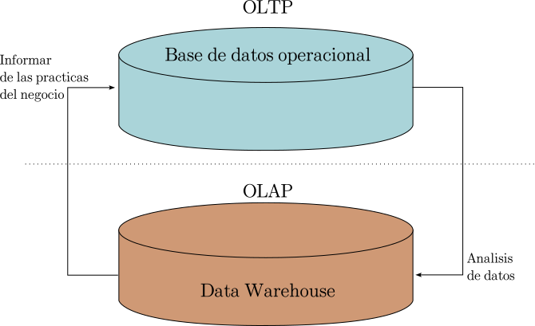
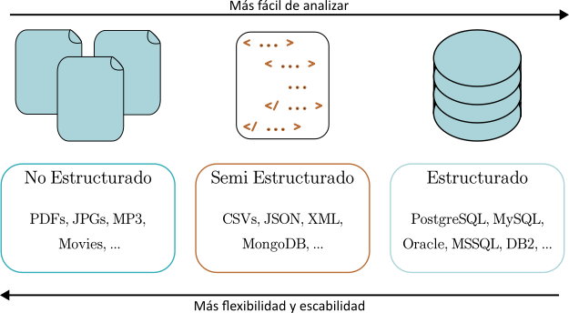
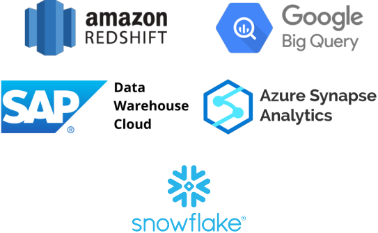
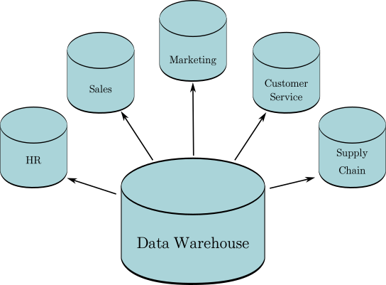
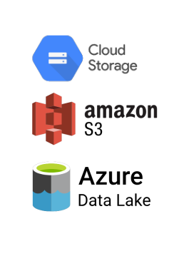

Teoría#
En esta sección se revisan algunos conceptos básicos relacionados con los datos y bases de datos.
Procesamiento de datos#
Existen dos aproximaciones de procesamiento de datos que definen el flujo, la estructura y la forma de almacenamiento de los datos:
Online Transaction Processing (OLTP): Las principales características de esta aproximación son las siguientes:
Orientado a transacciones.
Da soporte a transacciones diarias.
Orientado a aplicaciones.
Se actualiza frecuentemente.
Utiliza datos recientes, del día a día y datos operacionales.
Puede pesar algunos gigabytes.
Generalmente son bases de datos altamente normalizadas.
Puede tener miles de usuarios, entre empleados e incluso los clientes.
Suelen almacenarse en una ‘Operational database’.
Los queries suelen ser simples.
Ejemplos de queries:
Buscar el precio de un libro.
Actualizar la última transacción de un cliente.
Hacer un seguimiento de las horas de los empleados.
Online Analytical Processing (OLAP): Las principales características de esta aproximación son las siguientes:
Orientado a análisis.
Usado para analizar datos y hacer reportes para la toma de decisiones.
Orientado a una entidad para ser analizada.
Utiliza datos históricos y consolidados.
Puede pesar terabytes.
Utiliza queries complejos y aggregates.
Actualizaciones limitadas.
Utilizada por menos usuarios, generalmente solo analistas y científicos de datos de las organizaciones/compañías.
Generalmente son bases de datos no normalizadas.
Suelen almacenarse en un Data Warehouses.
Ejemplos de queries:
Calcular los libros con el mejor margen de beneficio.
Encontrar al cliente más leal.
Elegir al empleado del mes.
Ambos procesos pueden trabajar conjuntamente, de hecho, OLAP no podría existir si no fuera por OLTP.
{kind=link}
Estructuras del almacenamiento de datos#
Los datos pueden estar estructurados de tres maneras:
Datos estructurados: Siguen un esquema, tienen tipos de datos definidos y relaciones. Ejemplos: SQL, tablas en una base de datos relaciona. OLTP y OLAP suelen ser de este tipo.
Dato semi estructurados: No siguen un esquema grande. Tiene una estructura auto descriptiva. Ejemplos: CSV, NoSQL, XML, JSON.
Datos no estructurados: No siguen un esquema, conforman la mayor cantidad de datos del mundo. Ejemplos: Imágenes, audio, video, etc.
Entre más estructurados estén los datos, más fácil es analizarlos, pero son menos flexibles y escalables.
{kind=link}
Formas de almacenar datos#
Bases de datos#
Son colecciones estructuradas de datos diseñadas para almacenar, recuperar y administrar información. Son particularmente útiles para almacenar datos estructurados en tiempo real (OLTP) aunque también se pueden utilizar para OLAP. Suelen tener esquemas snowflake.
Las bases de datos se almacenan en servers, los cuales pueden alojar múltiples bases de datos y éstas, a su vez, almacenan tablas, las cuales almacenan información de una manera organizada. Los servers pueden estar ubicados localmente en la computadora o en la nube, en servicios como AWS, Azure, etc.
Data Warehouses#
Son repositorios grandes y centralizados para almacenar datos históricos de múltiples fuentes (OLAP). Están optimizados para consultas complejas y análisis. Usualmente se utilizan para business intelligence y reporteo. Suelen tener un esquema de estrella.
Algunos proveedores de soluciones de Data Warehouses son:
{kind=link}
Data marts#
Son un subconjuto de los data warehouses, dedicados a un tema en específico, diseñados para satisfacer una necesidad analítica específica de un departamento o grupo en una organización.
{kind=link}
Data Cubes (OLAP Cubes)#
Son bases de datos multidimensionales que están optimizados para procesamiento analítico. Son utilizados en sistemas OLAP para fast querying.

Data Lakes#
Son útiles para almacenar cantidades vastas de datos crudos y no procesados que pueden llegar a pesar hasta los petabytes. Pueden almacenar tanto datos estructurados como no estructurados y se puede usar para analizar (big data). Permiten flexibilidad y escalabilidad a un bajo costo. Es necesario que los datos estén bien categorizados o en caso contrario de convertiría en un data swamp.
Algunos proveedores de data lakes son:
{kind=link}
Bases de datos NoSQL#
Algunas de las características de las bases de datos NoSQL son las siguientes:
Es una base de datos menos estructurada.
Está más enfocada a archivos y documentos, en lugar de tablas.
Es particularmente útil cuando los datos crecen rápidamente, no hay esquemas definidos y existe una gran cantidad de datos.
Existen varios tipos de bases de datos NoSQL:
Key-value store: Son una combinación de llaves (identificadore únicos) y valores (cualquier cosa). Un ejemplo sería para administrar los carritos de compra de un servicio de venta en línea. Un ejemplo de este tipo es redis.
Document store: Similar a un llave-valor, en la que los valores suelen ser documentos. Un ejemplo sería para administrar contenido. Un ejemplo de este tipo es mongoDB.
Columnar database: Almacena los datos en columnas. Es escalable. Un ejemplo sería para análisis de big data donde la velocidad es importante. Un ejemplo de este tipo es cassandra.
Graph database: Los datos están interconectados y la mejor manera de representarlos es mediante un gráfica. Un ejemplo sería para redes sociales o recomendaciones. Un ejemplo de este tipo es neo4j.
{kind=link}
Flujos de datos#
Informan la manera de cómo los datos son obtenidos y de qué manera. Construyen data pipelines. Algunas aproximaciones al flujo de datos son:
ETL: Más tradicional para warehousing y análisis a pequeña escala. Los datos son transformados antes de ser almacenados.
ELT: Los datos están almacenados en su forma nativa en alguna solución de almacenamiento, como un data lake. Solo algunas partes de los datos son transformados para propósitos específicos.

Diseño de bases de datos#
Sirve para determinar cómo deben almacenarse los datos de manera lógica. Se utilizan dos conceptos importantes:
Modelos de bases de datos: Son especificaciones de alto nivel para la estructura de la base de datos. El modelo más popular es el modelo relacional, que se utiliza para crear bases de datos relacionales. Define filas como registros y columnas como atributos y tiene reglas como que cada fila debe de tener una llave única. Otro modelo importante es el modelo dimensional.
Schemas: Es una implementación del modelo. Aquí se definen las estructuras de manera más granular, como las tablas, campos, relaciones, índices, views, etc. Los esquemas deben de ser respetados al insertar datos estructurados en una base de datos relacional.
Modelado de datos#
Es el primer paso en el diseño de bases de datos. Es la fase de diseño abstracto, en el que se define el modelo de datos en el que los datos serán almacenados. Tiene tres niveles:
Modelo conceptual de datos: Describe las entidades, las relaciones y los atributos. Utiliza herramientas como diagramas de estructura de datos, diagramas entidad-relación (Entity Relationship Diagram (ERD)) y diagramas UML.
Modelo lógico de datos: Se definen las tablas, columnas y relaciones. Utiliza herramientas como modelos de bases de datos y esquemas, como podrían ser el modelo relacional y el esquema de estrella o copo de nieve.
Modelo físico de datos: Describe cómo será el almacenamiento a nivel físico (hardware). Usa herramientas como particiones, CPUs, índices, respaldos de sistemas, etc.
{kind=link}
En la imagen se pueden observar el ERD de la misma base de datos, pero con dos modelos de datos diferentes.
Relational modeling#
Es una forma de modelar datos en forma de tablas y relaciones entre las mismas. Una relación es un conjunto de tuplas y en cada tupla se comparte un conjunto de atributos o columnas. Algunas características del modelo relacional:
Cada tabla es una entidad.
Cada registro en una tabla es una sola observación de la entidad.
Las tablas se integran por relacionexs entre sí.
Las tablas están normalizadas.
Dimensional modeling#
Es una adaptación del modelo relacional para diseño de data warehouses. Está optimizado para OLAP. Están basados en el star schema. Está conformado por dos conceptos:
Fact table: Contiene métricas relacionadas al proceso de negocio. Suelen ser tablas largas, pero estrechas. Se actualizan constantemente. Están conformadas por dos tipos de columnas, facts y keys. Cada fact table tiene asociadas múltiples dimension tables.
fact: Contienen métricas o medidas del negocio, es decir, los datos que serán analizados, como pueden ser ventas, número de empleados, número de visitas de la página web, etc. Normalmente son fechas o números con los que se puede hacer algún tipo de aggregate.
keys: Son columnas que contienen los ids que se usan para relacionar con las dimension tables.
Dimension table: Proveen de contexto a los procesos de negocios. Informan con respecto a las métricas de las fact tables, quién las hizo, cómo las hicieron, cuándo las hicieron, etc. Normalmente son sustantivos. Suelen ser tablas estáticas que no se modifican continuamente. Suelen ser tablas pequeñas pero angostas.

Logical Schemas#
Representan la estructura abstracta de dominio de información. Existen dos tipos principales de esquemas lógicos:
Star schema: Una fact table tiene relación con múltiples dimension table, pero éstas no tienen relación con otras dimension table. Los datos jerarquizados están todos contenidos en la misma tabla (dimensión). Este el esquema por default en dimensional modeling al ser más sencillo.
Snowflake schema: Es una extensión del star schema, de manera que permite que las dimension tables se relacionen con otras dimension tables. Los niveles de los datos jerarquizados se colocan en una tabla nueva.
{kind=link}
Normalization#
La normalización es el proceso de eliminar información redundante en las tablas y promover la integridad de los datos en las tablas. También permite organizar la información. Es un proceso de múltiples pasos que establece los datos de forma tabular y elimina información repetida de tablas relacionadas. Divide las tablas en tablas más pequeñas y conecta estas tablas mediante relaciones. Existen distintos tipos de normalización:
1NF:
Cada registro debe ser único (no filas repetidas), no debe de haber dos o más registros iguales en una misma columna.
Cada campo en un registro debe de contener un solo valor.
Por ejemplo, en la siguiente tabla la columna ‘Product’ tiene productos separados por coma, eso viola la 1NF.
Customer_id (PK) |
Customer_email |
Product. |
|---|---|---|
235 |
cheese, milk |
|
455 |
shampoo |
|
767 |
banana |
2NF:
Satisface 1NF.
Si la PK es una sola columna, satisface automáticamente 2NF.
Si existe una PK compuesta, todas las columnas que no son PK, deben de depender de todas las PK, esto es, si hay columnas que solo dependen de una o algunas de las columnas que son PK y no todas, entonces se deben de poner en otra tabla (tanto las columnas PK como los valores dependientes de éstas).
Por ejemplo, en la siguiente tabla hay dos columnas PK, pero ‘Supplier_id’ y ‘Supplier_name’ no depende de ‘Customer_id (PK)’, solo dependen de ‘Product_id (PK)’ (el proveedor no depende del cliente, si no del producto que se vende), por lo tanto viola 2NF.
Customer_id (PK) |
Product_id (PK) |
Supplier_id |
Supplier_name |
|---|---|---|---|
235 |
2001 |
560 |
Dairy Co. |
455 |
2345 |
658 |
B&H |
767 |
6584 |
999 |
Fresh Inc. |
3NF:
Satisface 2NF.
Las columnas que no son PK no pueden depender de otras columnas que no son PK.
Por ejemplo, en la siguiente tabla la columna ‘Supplier_name’ depende del ‘Supplier_id’, pero ésta última no es una PK, por lo tanto viola 3NF.
Customer_id (PK) |
Supplier_id |
Supplier_name |
|---|---|---|
235 |
560 |
Dairy Co. |
455 |
658 |
B&H |
767 |
999 |
Fresh Inc. |
Existen más formas de normalización. A continuación se presentan algunas ordenadas de menos a más normalizadas
Elementary key normal form (EKNF).
Boyce-Codd normal form (BCNF).
Fourth normal form (4NF).
Essential tuple normal form (ETNF).
Fifth normal form (5NF).
Domain-key normal form (DKNF).
Sixth normal form (6NF).
Ventajas y desventajas#
Desventajas:
La normalización de tablas provoca que los joins de las tablas se vuelva más complicado y por lo tanto requieran más CPU.
La falta de normalización puede provocar tres tipos de anomalías:
Update anomaly: Es un inconsistencia de datos provocada por la redundancia de datos, se tendrían que actualizar muchos datos.
Insert anomaly: Es la incapacidad de insertar nuevos registros debido a que puede faltar información de algunas columnas (sobre todo cuando las columnas no aceptan valores Null).
Deletion anomaly: Ocurre al eliminar de manera no intencional registros al tratar de eliminar ciertos datos.
Ventajas:
Ahorran memoria al evitar la redundancia de datos.
Fuerza la consistencia de los datos.
Es más fácil y seguro actualizar, remover o agregar datos.
Es más fácil de agregar registros nuevos.
Entity Relationship Diagram (ERD)#
Es un diagrama que permite visualizar cómo las entidades de una base de datos se relacionan entre sí. Se utilizan para modelar y diseñar bases de datos. Están conformados por entidades, que normalmente serán las tablas, estas entidades mostrarán las columnas que conforman cada tabla y en algunos diagramas ER también mostrará el tipo de dato de las columnas. Es posible que también muestre los PK y FK.

Las relaciones entre columnas tienen una cardinalidad que especifica el tipo de relación entre las entidades, las tres más importantes son one-to-one, one-to-many y many-to-many. En el diagrama la cardinalidad se representa con los siguientes tipos de líneas:
Note
Las relaciones se leen en ambos sentidos, no únicamente en un sentido.